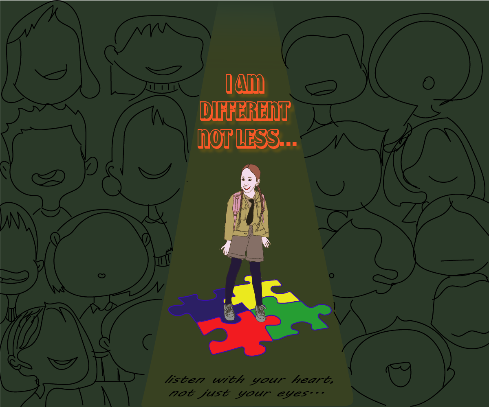

გრაფიკული დიზაინი წარმოადგენს ვიზუალური კომუნიკაციის ერთ-ერთ ყველაზე მნიშვნელოვან მიმართულებას.მისი მთავარი მიზანია ინფორმაციის მკაფიო და ესთეტიკური ფორმით გადაცემა.გრაფიკული დიზაინი გამოიყენება როგორც ბეჭდურ, ასევე ციფრულ მედიაში. ფონტების, ფერებისა და ფორმების სწორი კომბინაცია მნიშვნელოვან გავლენას ახდენს აღქმაზე. კარგი დიზაინი მომხმარებელს ეხმარება გზავნილის სწრაფად გააზრებაში. ამ სფეროში კრეატიულობა და ტექნიკური ცოდნა თანაბრად მნიშვნელოვანია.
| ფერები | ტიპოგრაფია | კომპოზიცია |
ფერები გრაფიკულ დიზაინში ემოციური გავლენის ერთ-ერთი მთავარი ინსტრუმენტია. თითოეულ ფერს შეუძლია გარკვეული განწყობის შექმნა.კომპოზიცია განსაზღვრავს, როგორ არის განლაგებული ელემენტები სივრცეში.ბალანსი და ჰარმონია დიზაინს უფრო თვალსასეიროს ხდის. არასწორად შერჩეულმა ფერებმა შეიძლება დიზაინის აღქმა გაართულოს. ამიტომ დიზაინერი ყოველთვის ითვალისწინებს ფერთა ფსიქოლოგიას.
| ლოგო დიზაინი | პოსტერი | ბანერი |

როგორ შეგვაფასებდით?